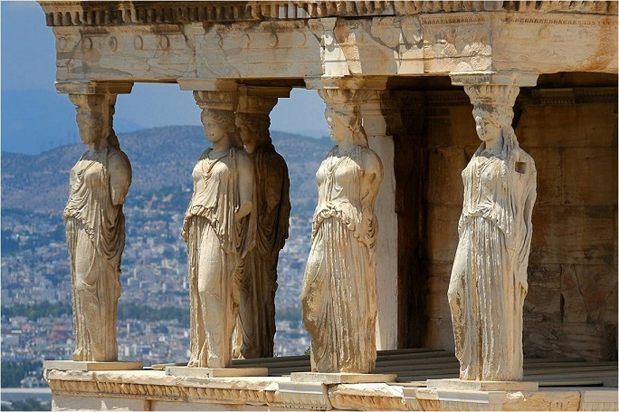

Arquitectura Griega
La arquitectura griega se preocupa por la simplicidad, la proporción, la perspectiva y la armonía de los edificios. La arquitectura griega incluye algunos de los edificios más bellos y característicos jamás construidos. Ejemplos de arquitectura griega son los templos, los teatros y los estadios, que se convirtieron en elementos comunes de las ciudades a partir de la Antigüedad.
Los arquitectos griegos influyeron enormemente en los arquitectos del periodo helenístico y del mundo romano, sentando las bases de los órdenes arquitectónicos clásicos que dominarían el mundo occidental desde el Renacimiento hasta nuestros días.
Los Órdenes Arquitectónicos Clásicos
Los órdenes arquitectónicos clásicos son cinco: dórico, jónico, corintio, toscano y compuesto, todos ellos denominados así en la época romana posterior. Los arquitectos griegos crearon los tres primeros e influyeron enormemente en los dos últimos, que eran compuestos más que auténticas innovaciones. Un orden, propiamente dicho, es una combinación de un determinado estilo de columna con o sin base y un entablamento (lo que sostiene la columna: el arquitrabe, el friso y la cornisa). El uso anterior de pilares de madera terminó evolucionando hacia la columna dórica de piedra. Se trataba de un fuste de columna estriado vertical, más delgado en su parte superior, sin base y con un capitel sencillo debajo de un ábaco cuadrado. El friso del entablamento alternaba triglifos y metopas.
El orden jónico, originario de Asia Menor a mediados del siglo VI a.C., añadía una base y una voluta, o capitel en volutas, a una columna más esbelta y recta. El entablamento jónico suele llevar un friso con esculturas ricamente talladas. La columna corintia, inventada en Atenas en el siglo V a.C., es similar a la jónica pero está rematada por un capitel más decorativo de hojas de acanto y helecho estilizadas. Estos órdenes se convirtieron en la gramática básica de la arquitectura occidental y es difícil pasear por cualquier ciudad moderna y no ver ejemplos de ellos de una forma u otra.
Materiales Utilizados por los Arquitectos Griegos
Sin duda, los griegos preferían el mármol, al menos para sus edificios públicos. Al principio, sin embargo, se utilizó la madera no solo para elementos arquitectónicos básicos como las columnas, sino también para los propios edificios. Los templos de principios del siglo VIII a.C. se construían así y tenían techos de paja. A partir de finales del siglo VII a.C., los templos empezaron a convertirse poco a poco en edificios de piedra, más duraderos; algunos incluso tenían una mezcla de ambos materiales. Algunos estudiosos sostienen que ciertas características decorativas de los capiteles de las columnas de piedra y los elementos del entablamento evolucionaron a partir de las habilidades del carpintero mostradas en elementos arquitectónicos de madera más antiguos.
La piedra elegida era piedra caliza protegida por una capa de estuco de polvo de mármol o, mejor aún, mármol blanco puro. Además, la piedra tallada se solía pulir con gamuza para darle resistencia al agua y un acabado brillante. El mejor mármol procedía de Naxos, Paros y el monte Pentelicón, cerca de Atenas.
